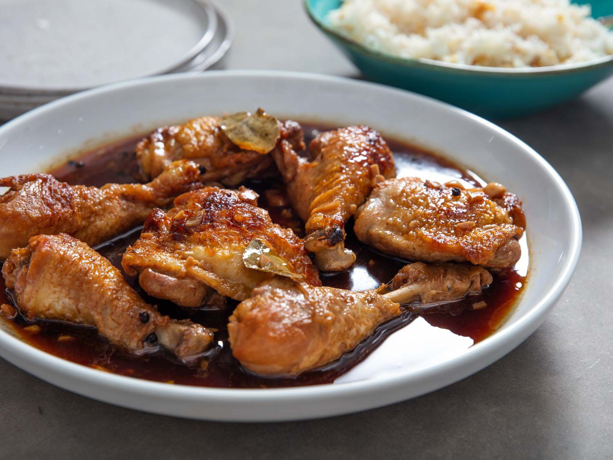

Chicken Adobo Recipe

Description
Chicken adobo is a classic Filipino dish that's as savory as it is bright with acid, and it goes
perfectly with a large platter of garlic fried rice.
Ingredients
- 1 tablespoon (15ml) cooking oil
- 4 bone-in, skin-on chicken legs, separated into thighs and drumsticks (about 2 1/2 pounds; 1.15kg)
- 8 cloves garlic, thinly sliced
- 2 whole fresh bay leaves (or 3 whole dried bay leaves)
- 1 1/2 teaspoons whole black peppercorns
- 1 1/4 cups (300ml) water
- 1 cup (240ml) soy sauce
- 1 cup (240ml) rice vinegar
- Salt
Directions
-
In a heavy-bottomed pot, heat oil over medium heat until shimmering. Blot chicken dry withpaper
towels, then season lightly all over with salt.
-
Work in batches if necessary, add chicken pieces to pot in a single layer, skin side down, making
sure not to overcrowd the pot. Cook until well browned, 6 to 7 minutes. Using tongs, flip chicken
pieces and cook until lightly brown on the second side, about 3 minutes. Transfer chicken to a plate
and set aside.
-
Add garlic, bay leaves, and peppercorns to now-empty pot and cook, stirring constantly, until mixture is
very fragrant and garlic turns a light golden color, about 30 seconds. Add water and stir with a wooden
spoon, scraping up any brown bits on the bottom of the pot. Add soy sauce and vinegar, return chicken
pieces to pot, increase heat to high, and bring liquid to a boil. Reduce heat to low, cover, and simmer
until chicken is cooked through and tender, about 20 minutes, turning the chicken pieces halfway through.
-
Chicken adobo is best served after sitting overnight in the refrigerator, but it can also be served
immediately, with steamed white rice or (preferably) garlic fried rice.
Back to Main Page